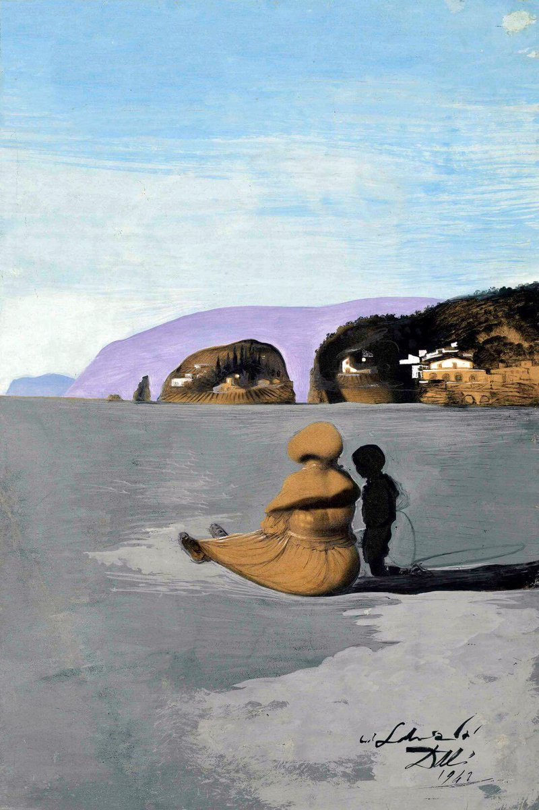

麦片
@maipianaini0930
@kazunoko_zunoco 刚刷到达利一幅达利的画“Adolescence”震撼的双重图像构图 他本人古典写实的技法展现得淋漓尽致。以及无尽的怪诞和超现实感
很巧 因为太巧了 这幅画构图也用了双重图像 我在想作者是不是从达利那获得了不少启发

かずのこ
@kazunoko_zunoco
ホッチキスの針幹線 https://t.co/9xBAokfygw